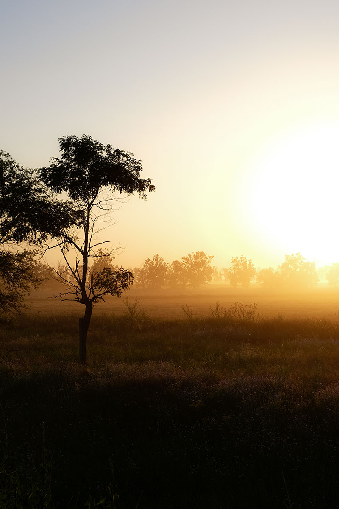

Расположение и основатели

Село Кубей расположено в долине некогда полноводной реки Карасулак, в 18 км севернее районного центра г. Болграда, в 220 км. юго - западнее областного центра - Одессы.
Село Кубей было образовано переселившимися сюда беженцами из Болгарии в 1809 году. Основные группы переселенцев (болгар и гагаузов) прибыли из села Дурмуш-Кьой (совр. Лозево Варненской области), городов Шумен Варненской области, Косовча (совр. Косово Варненской области), села Ени Махале (совр. Ново село Сливенской области). Но как административная единица село Кубей было обозначено на карте в 1814 году: именно в это время было введены в обиход метрические книги.
Основатели села Кубей поселились на месте ногайского поселения с одноименным названием. На новой родине болгары и гагаузы получили от царского правительства по 60 десятин земли на семью в вечное пользование без права купли-продажи. Они освобождались на 10-летний срок от налогов и повинностей, а также от военной и гражданской службы.
Такие благоприятные условия способствовали быстрому увеличению количества жителей Кубея: если в 1816 году в селе проживало 133 семьи, 652 человека, то в 1848 году — уже 1516 человек.
Традиционные отрасли сельскохозяйственного производства
Жители Кубея продолжают заниматься традиционными отраслями сельскохозяйственного производства: хлебопашеством, огородничеством, виноградарством, садоводством и животноводством, преимущественно овцеводством. Развиваются различные промыслы, кустарное производство: кожухарство, маслобойное и мукомольное производство.
Современное Червоноармейское представляет собой село с более чем 6-тысячным населением, оно по-прежнему является одним из самых больших сел не только в Болградском районе, а и в Одесской области. За последние годы, после различных реформ и изменений в экономической и социальной политике, в Червоноармейском существенной реорганизации подверглось хозяйство. Колхоз имени Калинина, некогда один из самых стабильных и развитых, стал вначале коллективным сельхозпредприятием КСП «Кубей», затем, после очередной реформы, СПК «Кубей» (СПК-сельскохозяйственный производственный кооператив). В течение нескольких лет, после распаевания, в Червоноармейском был создан СПК «Бесарабия». Сегодня эти два хозяйства сосуществуют и делают все, чтобы возродить славу кубейских земледельцев.
Говоря о современном Червоноармейском нельзя не отметить тот факт, что образование и культура продолжают оставаться приоритетными направлениями в социальной сфере. Сегодня в селе функционируют два учебных заведения — Червоноармейский учебно-воспитательный комплекс «лицей-общеобразовательная школа I - III ступеней» и Червоноармейская общеобразовательная школа I - III ступеней имени академика А.С. Теодорова-Балана. В этих двух школах обучаются 787 учащихся. Выпускники Червоноармейского на протяжении многих лет стабильно поступают в высшие и средне-специальные учебные заведения Украины, Молдовы и России.